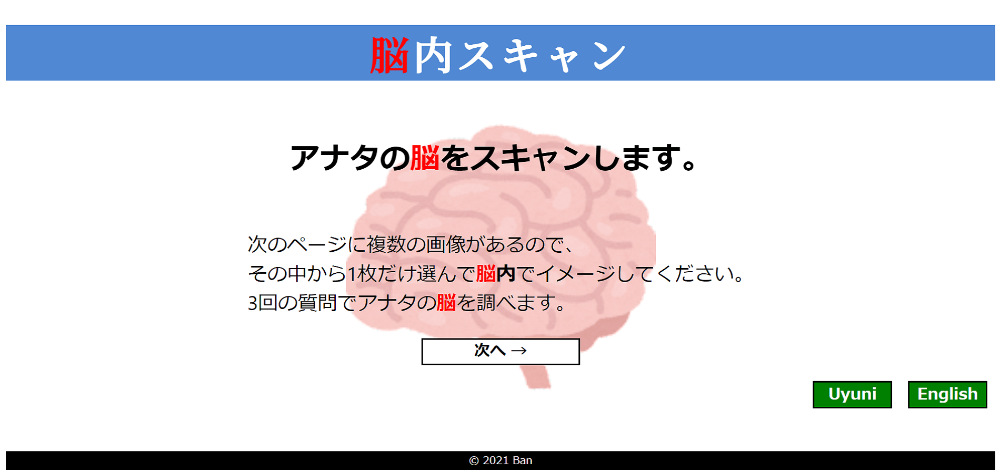

| 作品名 | 脳内スキャン |
|---|---|
| 制作年月日 | |
| ターゲットユーザー | 10~20代の男女 |
| 狙い・目的 | 学園祭の来場者向けサイト |
| コンセプト・ポイント | 驚く仕掛けの診断サイト |
| クライアントの意向・制約 | 不特定多数が楽しめるサイト |
| 制作時間 | 約20時間 |
| 使用言語・ソフト | HTML, CSS |
| 工夫した点 | 元々は8枚の写真から選ぶようにしていたが、 インパクトが足りなかったので40枚まで増やし、 今度は見づらくなったので24枚の画像から選ぶスタイルに落ち着いた。 右下のタブで画像を変えたり英語バージョンに変更できるようにした。 |